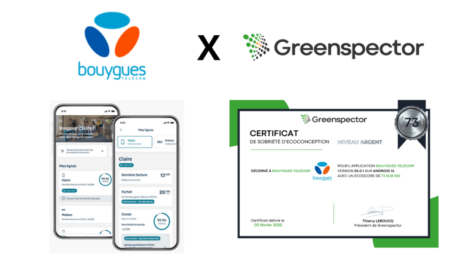
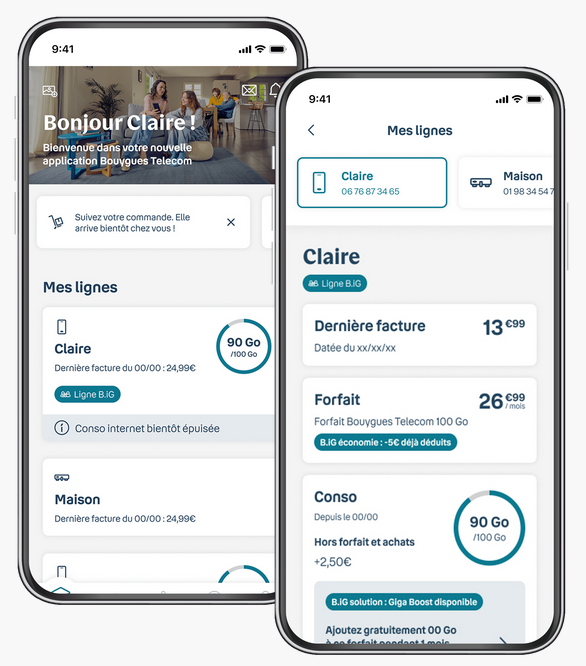

Context
Progression from Bronze to Silver
How the Bouygues Telecom Customer Portal mobile application gained performance while reducing its carbon impact by nearly 700 tCO2e per year.
The application obtained the Greenspector Digital Frugality Certificate at Silver level, two years after Bronze. The analysed user journey shows a 36% drop in carbon impact, i.e. 693 tCO2e avoided per year on Android.
The key: integrate regular measurements via Greenspector Studio into CI/CD to track changes and avoid regressions.


François Lankar, Head of Mobile Care and Assistance Division at IT, shares the team's feedback.
Interview
From Bronze to Silver level
In 2022, Bronze level already validated the energy efficiency improvement trajectory. In 2024, the team reached a new milestone by systematically using measurement reports to identify the most battery- and data-intensive journeys.
Objectives were treated as a real technical project: consumption targets per journey, tracking over time, and action prioritisation. Achieving Silver level required nearly a year of work.
Technical choices
Analysis, optimisation and iterations
Teams combined profiling tools and Greenspector scripts to detect the most consuming code areas (CPU, memory, energy) and optimise data exchanges (call batching, cache, network orchestration).
Work followed an iterative logic: measure, analyse, fix, re-measure.
Industrialisation
Integrating Greenspector Studio into CI/CD
Greenspector Studio was integrated into the continuous integration pipeline to ensure each new version does not degrade ecoscore. Before each go-live, the candidate version is compared to the previous one to prevent any regression.
The least performant steps are turned into sprint tickets, establishing continuous improvement driven by measurement.
The 693 tCO2e saved relate to the Android version. Next steps include iOS and the Customer Portal web portal.
Application
Test the Bouygues Telecom application
Bouygues Telecom Customer Portal mobile application on Google Play: